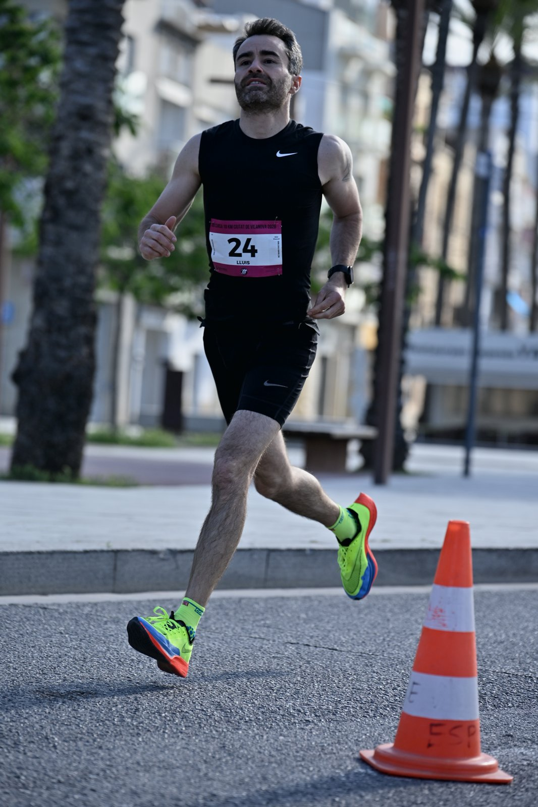
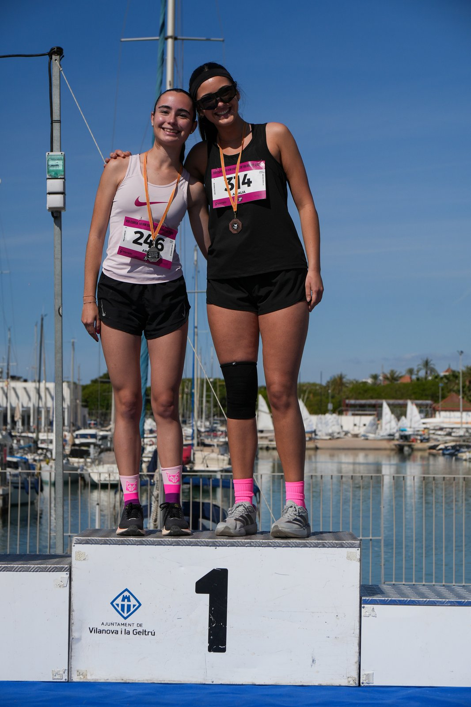

The Cursa Ciutat de Vilanova took place on Sunday 17 May 2026 in Vilanova i la Geltrú, Barcelona province, with event coverage by the Image Media team. The event was organised by Club Atletisme Atletesvng.org and staged its 13th edition of the 10km race, 11th edition of the 5km, 8th edition of the Children's 800m and, new for 2026, the 1st edition of a Mile Obert race.
The 10km and 5km races, both homologated by the Catalan Athletics Federation, started together at 9:00am from the Passeig Marítim on the straight by Plaça del Port, running a flat, largely traffic-free circuit along the seafront promenade and around the Rambla del Port. The Mile Obert, homologated by the Spanish Athletics Federation (RFEA), followed at 11:00am, with the Children's 800m closing the morning at 11:30am. A water station was set up at the 5km mark, with showers, a cloakroom service and pacers available on race day.

Registration was capped at 700 runners for the 10km and 400 for the 5km, with entry priced at €18 for either distance. The course record stands at 29'46" for men (Xavier Badia, 2023) and 33'46" for women (Meritxell Soler, 2023) over 10km, and 14'45" for men (Marc Fernández, 2025) and 16'31" for women (Elia Saura, 2025) over 5km.

Podium finishers in the men's and women's 10km were presented with the Audi Vilamobil grand prize — gift vouchers of €80 for first place, €50 for second and €30 for third — at a ceremony held at the Port de Vilanova, backed by the Ajuntament de Vilanova i la Geltrú.
The Image Media coverage team comprised José Ramón Moreno, Pablo Carvajal and Frank Eggers.